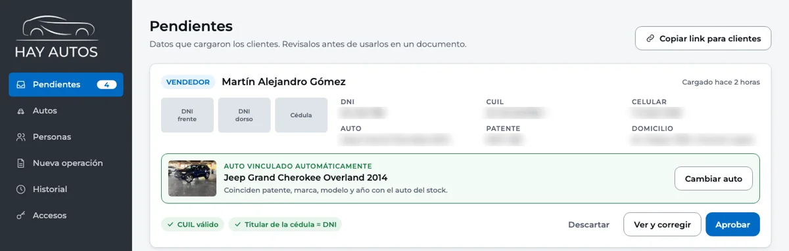

HAY AUTOS
Automatización comercial para una agencia de compraventa de autos (Vicente López, Buenos Aires)Sales automation for a used-car dealership (Buenos Aires, Argentina)
El problemaThe problem
El stock vivía en un Excel, las consultas de Instagram se respondían a mano y los documentos de cada venta (reserva, boleto, formulario 08) se armaban copiando datos del DNI y de la cédula del auto.Inventory lived in a spreadsheet, Instagram inquiries were answered by hand, and every sale's paperwork (reservation, bill of sale, transfer form) was built by retyping data from IDs and car titles.
Qué construíWhat I built
- Bot de Instagram que da precio, datos y fotos del stock y deriva a WhatsApp con el mensaje ya escrito.Instagram bot that answers price, specs and photos from inventory, then hands off to WhatsApp with a pre-filled message.
- Link para clientes: suben DNI y cédula con el celular y la IA los lee; el panel los vincula al auto por patente.Client link: customers upload their ID and car title from their phone, AI extracts the data and the dashboard links it to the car by plate.
- Panel web (13 pantallas): pendientes, autos, personas, operaciones, historial y accesos con Google.Web dashboard (13 screens): pending items, cars, people, deals, history and Google sign-in access.
- Documentos de venta al instante, con montos en letras y CUIL verificado.Instant sale documents, with amounts in words and validated tax IDs.
- Publicaciones automáticas: la IA ordena las fotos de Drive y arma el carrusel; historias cada 3 días.Automated posts: AI orders the Drive photos and builds the carousel; stories every 3 days.
- Radar: cruza lo que buscan los clientes con autos disponibles, con un puntaje sin IA.Radar: matches what customers are looking for with available cars, using a non-AI score.
Estado e iteraciónStatus and iteration
La demo completa corre de punta a punta y se probó en real (login, carga desde el celular, aprobación). El dueño la vio y pidió el Radar y la carga manual, que construí ese mismo día. Próximo paso: servidor propio y conectar la cuenta real de Instagram.The full demo runs end to end and was tested for real (login, upload from a phone, approval). The owner reviewed it and asked for the Radar and manual entry, which I built that same day. Next step: own server and connecting the real Instagram account.
